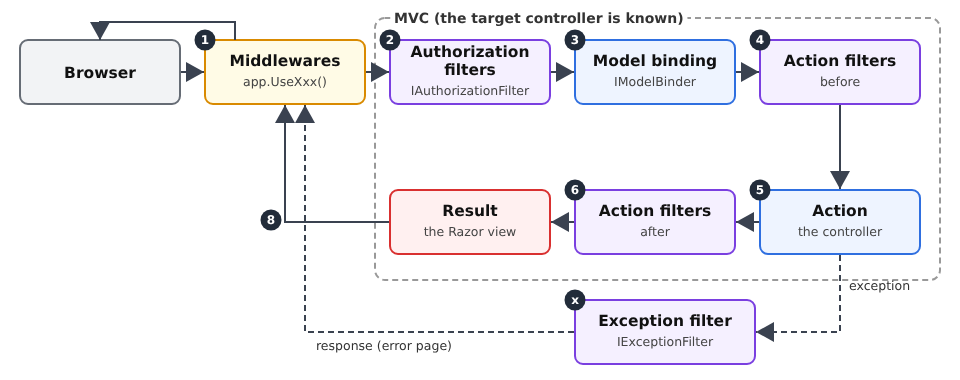
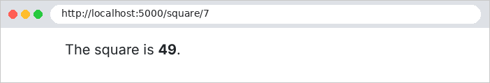
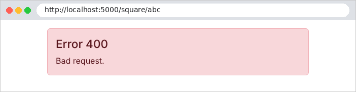
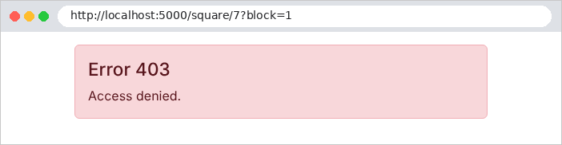
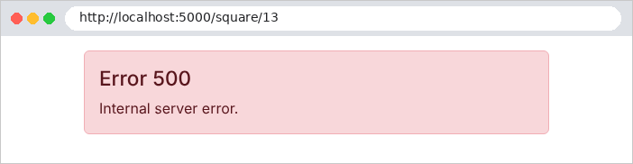

7. El ciclo de vida de una solicitud
Entre la llegada de una solicitud y la ejecución de la acción, [ASP.NET Core] interviene varios tipos de objetos, cada uno con un rol específico. Ya hemos encontrado algunos: los middleware ([UseStaticFiles], [UseRequestLocalization], el middleware del ejemplo 23) y el enlace de modelo ([IModelBinder], ejemplo 12). El componente MVC agrega los filtros que se ejecutan alrededor de la acción. El caso de estudio usa cada uno de ellos:

Objeto | Rol | En el caso de estudio |
middleware | Prepara la solicitud; aún no conoce la acción | archivos estáticos, idioma, autenticación (lectura del token), páginas de error |
filtro de autorización | permitir o denegar el acceso a la acción | [[Authorize]], [[Authorize(Roles = ...)]] |
Enlace de modelo | Convertir y validar los parámetros | formularios, [ModelState] |
filtro de acción | Código antes y después de la acción | (no se usa: bastan los servicios y la clase padre de las vistas) |
filtro de excepciones | Convertir una excepción en una respuesta | Sesión expirada: redirección a /login |
7.1. Ejemplo 24: las etapas del procesamiento de una solicitud
El ejemplo 24 tiene una acción que calcula el cuadrado de un número y un objeto de cada tipo. Cada uno escribe una línea en la consola, para que podamos ver el orden en que se ejecutan.
| 24-lifecycle/
├── Controllers/
│ ├── CalcController.cs
│ └── ErrorController.cs
├── Filters/
│ ├── BlockAttribute.cs
│ ├── ErrorPageFilter.cs
│ ├── IntegerBinder.cs
│ ├── LoggerMiddleware.cs
│ └── TimingAttribute.cs
├── Views/
│ ├── Calc/
│ │ └── Result.cshtml
│ ├── Shared/
│ │ ├── _Layout.cshtml
│ │ └── Error.cshtml
│ └── _ViewStart.cshtml
├── appsettings.json
├── Example24.csproj
└── Program.cs
|
El archivo [Filters/LoggerMiddleware.cs]:
| namespace Example24.Filters;
// un middleware escrito como clase: recibe el resto del pipeline
// (next) en su constructor y procesa cada solicitud en InvokeAsync
public class LoggerMiddleware(RequestDelegate next)
{
public async Task InvokeAsync(HttpContext context)
{
Console.WriteLine();
Console.WriteLine($"--- {context.Request.Method} {context.Request.Path}{context.Request.QueryString}");
Console.WriteLine("1. middleware (before)");
await next(context); // todo el resto: enrutamiento, filtros, acción, vista
Console.WriteLine($"8. middleware (after: code {context.Response.StatusCode})");
}
}
|
- Línea 5: un middleware puede ser una clase. Su constructor recibe un [RequestDelegate]: el resto de la canalización (los middleware siguientes, seguidos de MVC);
- línea 7: el método [InvokeAsync] se llama en cada solicitud;
- línea 12: el middleware llama al resto de la canalización y espera a que termine. Si no la llamara, la solicitud se detendría allí (tendría entonces que generar la respuesta por sí mismo). El código colocado antes de esta llamada se ejecuta en la ida de la solicitud, y el código colocado después se ejecuta en el regreso: el middleware “envuelve” todo lo demás y ve el código de estado final de la respuesta.
El archivo [Filters/BlockAttribute.cs]:
| using Microsoft.AspNetCore.Mvc;
using Microsoft.AspNetCore.Mvc.Controllers;
using Microsoft.AspNetCore.Mvc.Filters;
namespace Example24.Filters;
// un filtro de AUTORIZACIÓN: decide si se puede ejecutar la acción.
// También es un atributo: se coloca en un controlador o en una acción.
public class BlockAttribute : Attribute, IAuthorizationFilter
{
public void OnAuthorization(AuthorizationFilterContext context)
{
// el filtro conoce la acción objetivo, a diferencia del middleware
var action = (ControllerActionDescriptor)context.ActionDescriptor;
Console.WriteLine($"2. authorization filter (targeted action: {action.ActionName})");
if (context.HttpContext.Request.Query.ContainsKey("block"))
{
// asignar Result cortocircuita el resto: sin enlace, sin acción
context.Result = new StatusCodeResult(StatusCodes.Status403Forbidden);
}
}
}
|
- línea 9: un filtro de autorización implementa [IAuthorizationFilter]. La clase también deriva de [Attribute]: se puede aplicar, entre corchetes, a un controlador o a una acción;
- líneas 14–15: a diferencia de un middleware, el filtro conoce la acción de destino ([ActionDescriptor]). Esto es lo que permite que el atributo [[Authorize(Roles = "ADMIN")]] (véase el capítulo siguiente) proteja solo ciertas acciones;
- líneas 16–19: un filtro rechaza la solicitud estableciendo [context.Result]: la secuencia (enlace, acción) no se ejecuta, y este resultado pasa a ser la respuesta. Aquí, una respuesta 403 (acceso denegado), sin contenido.
El archivo [Filters/IntegerBinder.cs]:
| using Microsoft.AspNetCore.Mvc.ModelBinding;
namespace Example24.Filters;
// el enlace del modelo de un parámetro entero (ver ejemplo 12)
public class IntegerBinder : IModelBinder
{
public Task BindModelAsync(ModelBindingContext context)
{
var value = context.ValueProvider.GetValue(context.ModelName).FirstValue;
Console.WriteLine($"3. model binding (received value: \"{value}\")");
if (int.TryParse(value, out var integer))
{
context.Result = ModelBindingResult.Success(integer);
}
else
{
context.ModelState.AddModelError(context.ModelName, $"\"{value}\" is not an integer.");
}
return Task.CompletedTask;
}
}
|
Un enlace de modelo personalizado, como los del ejemplo 12. Un valor inválido no detiene nada: el error se registra en [ModelState], y la acción determina el resultado (línea 18).
El archivo [Filters/TimingAttribute.cs]:
| using System.Diagnostics;
using Microsoft.AspNetCore.Mvc.Filters;
namespace Example24.Filters;
// un filtro de ACCIÓN: código antes y después de la acción.
// ActionFilterAttribute: una clase del framework, cuyos métodos útiles sobrescribimos
public class TimingAttribute : ActionFilterAttribute
{
private const string Key = "timing";
public override void OnActionExecuting(ActionExecutingContext context)
{
// los parámetros de la acción ya están enlazados: el filtro puede leerlos
Console.WriteLine($"4. action filter (before; parameters: {string.Join(", ", context.ActionArguments.Values)})");
context.HttpContext.Items[Key] = Stopwatch.StartNew();
}
public override void OnActionExecuted(ActionExecutedContext context)
{
var timer = (Stopwatch)context.HttpContext.Items[Key]!;
// context.Exception: la excepción que la acción pudo haber lanzado
var outcome = context.Exception is null ? "" : $", exception {context.Exception.GetType().Name}";
Console.WriteLine($"6. action filter (after, {timer.ElapsedMilliseconds} ms{outcome})");
}
}
|
- línea 8: un filtro de acción. [ActionFilterAttribute] es una clase del framework que ya implementa las interfaces necesarias: sobrescribimos ([override]) los métodos pertinentes;
- Líneas 12–16: [OnActionExecuting] se ejecuta antes de la acción. El enlace de modelo ya ha tenido lugar: los parámetros de la acción están disponibles ([ActionArguments]). Se inicia un cronómetro ([Stopwatch]), almacenado en [HttpContext.Items] (ámbito de solicitud; véase el capítulo 6);
- líneas 19–24: [OnActionExecuted] se ejecuta después de la acción. Si la acción lanzó una excepción, está disponible en [context.Exception]. Un filtro de acción también puede reemplazar el resultado de la acción ([context.Result]).
El archivo [Filters/ErrorPageFilter.cs]:
| using Microsoft.AspNetCore.Mvc;
using Microsoft.AspNetCore.Mvc.Filters;
using Microsoft.AspNetCore.Mvc.ModelBinding;
using Microsoft.AspNetCore.Mvc.ViewFeatures;
namespace Example24.Filters;
// un filtro de EXCEPCIONES: convierte una excepción en una respuesta
public class ErrorPageFilter(IModelMetadataProvider metadata) : IExceptionFilter
{
public void OnException(ExceptionContext context)
{
Console.WriteLine($"x. exception filter ({context.Exception.GetType().Name}: {context.Exception.Message})");
// en lugar de la página de error predeterminada, nuestra vista Error, con el código 500
context.Result = new ViewResult
{
ViewName = "Error",
StatusCode = StatusCodes.Status500InternalServerError,
ViewData = new ViewDataDictionary(metadata, context.ModelState) { Model = 500 },
};
context.ExceptionHandled = true; // la excepción está controlada: no avanza más
}
}
|
- Línea 9: un filtro de excepciones implementa [IExceptionFilter]. Recibe las excepciones lanzadas por el enlace de modelo, los filtros de acción y la acción. Es un servicio: recibe por inyección el objeto [IModelMetadataProvider], necesario para construir el diccionario [ViewData] de una vista;
- líneas 15–20: en lugar de la página de error predeterminada, el filtro genera una página HTML: la vista [Error], con código de estado 500. Esto es lo que hace el método [View] de un controlador, escrito aquí a mano;
- Línea 21: la excepción se marca como gestionada; no se propaga más arriba en la cadena.
El archivo [Program.cs]:
| using System.Text.Encodings.Web;
using System.Text.Unicode;
using Example24.Filters;
using Microsoft.Extensions.FileProviders;
var builder = WebApplication.CreateBuilder(args);
builder.Services.AddControllersWithViews(options =>
{
// un filtro GLOBAL: se aplica a todas las acciones de la aplicación
options.Filters.Add<ErrorPageFilter>();
});
builder.Services.AddSingleton(HtmlEncoder.Create(UnicodeRanges.All));
var app = builder.Build();
// los middlewares se ejecutan en el orden en que se agregan
app.UseMiddleware<LoggerMiddleware>();
// una respuesta de error SIN contenido (400, 403, 404...): la solicitud se
// vuelve a ejecutar con la dirección /error/{code}, que construye una página
app.UseStatusCodePagesWithReExecute("/error/{0}");
app.UseStaticFiles(new StaticFileOptions
{
FileProvider = new PhysicalFileProvider(Path.GetFullPath(Path.Combine(builder.Environment.ContentRootPath, "..", "common", "bootstrap"))),
RequestPath = "/bootstrap",
});
app.MapControllers();
app.Run();
|
- línea 10: un filtro global se aplica a todas las acciones de la aplicación. Se agrega a las opciones de MVC;
- línea 17: un middleware basado en una clase se agrega mediante [UseMiddleware]. Los middleware se ejecutan en el orden en que se agregan: este es el primero, por lo que procesa todas las solicitudes;
- línea 20: un middleware del framework. Cuando una respuesta de error (códigos 400–599) no tiene contenido, vuelve a ejecutar la solicitud usando la dirección [/error/{code}] (donde [{0}] se reemplaza por el código) y devuelve la página resultante conservando el código de error. Así es como las respuestas 403 del filtro de autorización, las respuestas 400 de la acción y las respuestas 404 del enrutamiento se convierten en páginas HTML.
El archivo [Controllers/CalcController.cs]:
| using Example24.Filters;
using Microsoft.AspNetCore.Mvc;
namespace Example24.Controllers;
// dos filtros colocados en el controlador: se aplican a todas sus acciones
[Block]
[Timing]
public class CalcController : Controller
{
[HttpGet("square/{n}")]
public IActionResult Square([ModelBinder(typeof(IntegerBinder))] int n)
{
Console.WriteLine($"5. action Square({n}); valid model: {ModelState.IsValid}");
if (!ModelState.IsValid)
{
return BadRequest(); // un 400 sin contenido: ver UseStatusCodePagesWithReExecute
}
if (n == 13)
{
throw new InvalidOperationException("13 brings bad luck"); // un error "inesperado"
}
return View("Result", n * n);
}
}
|
- líneas 7–8: dos filtros aplicados al controlador; se aplican a todas sus acciones (también se pueden aplicar a una sola acción);
- línea 12: el enlace de parámetros personalizado;
- líneas 15–17: un parámetro inválido: una respuesta 400 sin contenido;
- líneas 19–21: un error “inesperado”, para ver el filtro de excepciones en acción.
El archivo [Controllers/ErrorController.cs]:
| using Microsoft.AspNetCore.Mvc;
namespace Example24.Controllers;
public class ErrorController : Controller
{
// [Route] sin método HTTP: la solicitud reejecutada conserva su método original
[Route("error/{code:int}")]
public IActionResult Display(int code)
{
Console.WriteLine($"7. error page {code} (re-executed request)");
Response.StatusCode = code; // la página conserva el código de error
return View("Error", code);
}
}
|
- línea 8: la acción de la página de error. [[Route]], sin método HTTP, acepta todos los métodos: una solicitud POST que se vuelve a ejecutar sigue siendo una solicitud POST;
- Línea 12: la página conserva el código de error original.
El archivo [Views/Shared/Error.cshtml]:
| @* la página de error; su modelo: el código de error *@
@model int
@{
var message = Model switch
{
400 => "Bad request.",
403 => "Access denied.",
404 => "Page not found.",
_ => "Internal server error.",
};
}
<div class="alert alert-danger">
<h1 class="h4">Error @Model</h1>
<p class="mb-0">@message</p>
</div>
|
- Líneas 4–10: una expresión switch [C#]: devuelve el valor de la primera rama cuyo patrón coincide con el modelo. [_] corresponde a todo lo demás. La vista está en [Views/Shared]: se encuentra sea cual sea el controlador ([CalcController] para el filtro de excepciones, [ErrorController] en los demás casos).
Cinco solicitudes: un cálculo normal (http://localhost:5000/square/7), un parámetro inválido ([/square/abc]), una solicitud bloqueada por el filtro de autorización ([/square/7?block=1]), un error inesperado ([/square/13]) y una dirección desconocida ([/unknown]). La consola del servidor:
| --- GET /square/7
1. middleware (before)
2. authorization filter (targeted action: Square)
3. model binding (received value: "7")
4. action filter (before; parameters: 7)
5. action Square(7); valid model: True
6. action filter (after, 0 ms)
8. middleware (after: code 200)
--- GET /square/abc
1. middleware (before)
2. authorization filter (targeted action: Square)
3. model binding (received value: "abc")
4. action filter (before; parameters: )
5. action Square(0); valid model: False
6. action filter (after, 0 ms)
7. error page 400 (re-executed request)
8. middleware (after: code 400)
--- GET /square/7?block=1
1. middleware (before)
2. authorization filter (targeted action: Square)
7. error page 403 (re-executed request)
8. middleware (after: code 403)
--- GET /square/13
1. middleware (before)
2. authorization filter (targeted action: Square)
3. model binding (received value: "13")
4. action filter (before; parameters: 13)
5. action Square(13); valid model: True
6. action filter (after, 0 ms, exception InvalidOperationException)
x. exception filter (InvalidOperationException: 13 brings bad luck)
8. middleware (after: code 500)
--- GET /unknown
1. middleware (before)
7. error page 404 (re-executed request)
8. middleware (after: code 404)
|
Este registro muestra:
- el orden de las etapas: middleware, filtro de autorización, enlace de modelo, filtro de acción (antes), acción, filtro de acción (después) y, por último, de nuevo el middleware, que ve el código de respuesta final;
- el filtro de autorización que rechaza la solicitud omite el resto de MVC (sin enlace, sin acción);
- un parámetro inválido no impide que la acción se ejecute: la propia acción decide, a partir de [ModelState] (véase el ejemplo 09);
- una excepción de la acción la gestiona el filtro de excepciones, que genera la respuesta;
- una respuesta de error vacía (400, 403, 404) se convierte en una página mediante la nueva ejecución de la solicitud (etapa 7). Para una dirección desconocida, MVC ni siquiera interviene: ninguna ruta coincide.
Las páginas resultantes:




Verifiquemos que el código de error se conserva:
| curl -i http://localhost:5000/square/7?block=1
|
| HTTP/1.1 403 Forbidden
Content-Type: text/html; charset=utf-8
<!doctype html>
<html lang="en">
<head>
<meta charset="utf-8">
<title>Lifecycle</title>
<link rel="stylesheet" href="/bootstrap/css/bootstrap.min.css">
</head>
<body>
<div class="container py-3">
<div class="alert alert-danger">
<h1 class="h4">Error 403</h1>
<p class="mb-0">Access denied.</p>
</div>
</div>
</body>
</html>
|
El caso de estudio combina estos mecanismos: [UseStatusCodePagesWithReExecute("/error/{0}")] y un controlador ([ErrorController]) para las páginas 400, 403 y 404; el middleware [UseExceptionHandler("/error/500")], que de manera similar vuelve a ejecutar cualquier solicitud que termina con una excepción no controlada; y un filtro de excepciones ([Web/HtmlExceptionFilter.cs]) para un caso particular: una sesión expirada no muestra una página de error, sino que redirige a la página de inicio de sesión.